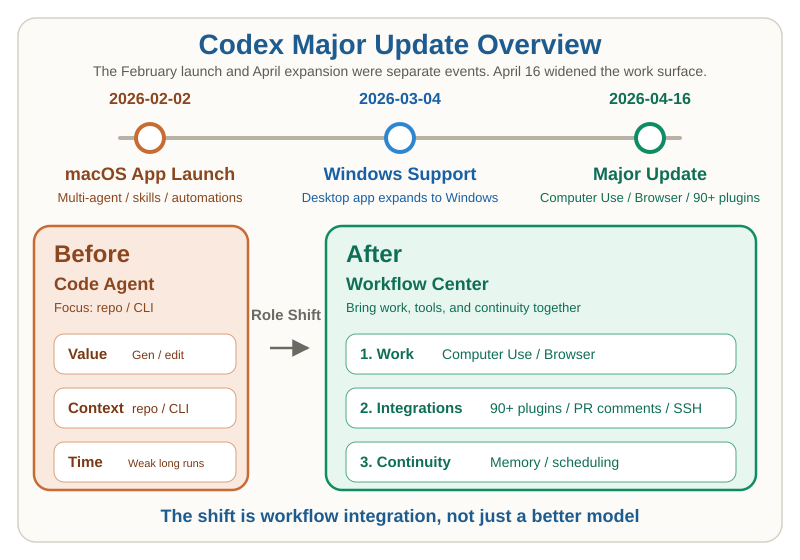

OpenAI Codex Desktop App Major Update (April 2026)¶
What Changed with Computer Use, the In-App Browser, and 90+ Plugins¶
Target Audience
- Developers tracking Codex, Claude Code, and desktop coding agents
- Tech leads evaluating how far Codex now reaches beyond code generation
- Readers who want the April 16 update separated from the February 2 app launch
On April 16, 2026, OpenAI published Codex for (almost) everything. The key point is that this was not the launch date of the Codex app itself. The desktop app launched for macOS on February 2, and Windows support followed on March 4. April 16 should be read as a major expansion of the app's role, not the original launch.12
The question is simple: what can Codex do after this update, and which part of the developer workflow changes most?
Key Points¶
- Separate the February 2 app launch from the April 16 major expansion
- Read the update as a workflow expansion, not only a model improvement
- Compare Codex and Claude Cowork by product center, not by release timing alone
Start with the dates¶
What gets mixed up in second-hand summaries is the difference between the February 2 app launch and the April 16 major expansion. Windows support on March 4 sits between them. Separating those three dates makes it much easier to understand what is new, what was already in the app, and what is still rolling out gradually.12

The update expanded in three directions¶
1. The work surface got wider¶
The biggest change is that Codex moved beyond code-only tasks. OpenAI put background computer use front and center, describing how Codex can look at apps on a Mac, click, and type while multiple agents continue running in parallel. The design goal is clear: let the agent keep working without forcing the user to stop their own work.1
The in-app browser and image generation extend that same layer. Inside the browser, users can comment directly on a page. Inside the app, gpt-image-1.5 can generate and edit images. That makes it easier to run a tighter loop across UI checks, mockups, assets, and code changes.14
This matters most for work such as:
- validating and fixing local UI behavior
- testing desktop apps that do not expose clean APIs
- adjusting designs from screenshots
- frontend work with constant back-and-forth between code and visuals
2. The integration surface got deeper¶
This update is also about stronger connections to surrounding tools. OpenAI announced more than 90 additional plugins and named services such as Atlassian Rovo, CircleCI, CodeRabbit, GitLab Issues, Microsoft Suite, and Render.1
The important detail is that plugins are not just thin API wrappers. OpenAI frames them as a packaging unit that can combine skills, app integrations, and MCP servers. That means Codex is starting to become a distribution surface for reusable team workflows, not just a personal coding assistant.3
The app also gained more developer-facing features: GitHub review comments, multiple terminal tabs, richer previews, a summary pane, and SSH access to remote devboxes. The center of gravity moves from “a place that writes code” to “a place that lets you inspect, revise, review, and connect work.”1
3. The continuity surface got longer¶
The third shift is persistence. Codex is starting to move beyond one-off sessions. OpenAI expanded automations with thread reuse, future work scheduling, and the ability to resume longer-running tasks. That pushes Codex toward work that spans days or even weeks instead of a single prompt window.1
Memory preview matters here too. Codex can remember preferences, edit history, and information that took time to gather, then use projects, plugins, and memory to suggest what to do next. That is more than passive history. It is the beginning of a layer that can actively set up the next task for you.1
OpenAI says it already uses automations for issue triage, CI failure summaries, daily release briefs, and bug checks. That is where the product value starts to widen beyond one-shot code generation.12
What changed at a deeper level¶
The real shift is not just that Codex became a smarter coding model. What changed is that instruction, execution, inspection, and continuity are being pulled into one app surface.
| Older Codex shape | Codex after April 16 |
|---|---|
| Centered on code generation and patching | Includes desktop actions, browser work, and image generation |
| Delegated one task at a time | Can resume long-running work and scheduled follow-ups |
| Lived mostly in GitHub and the CLI | Pulls review, inspection, connection, and summaries into the app |
| Heavily dependent on personal setup | Starts to package reusable team workflows through plugins |
That also changes the competitive lens. Going forward, it is not enough to ask which model is smartest. The more useful question is: how wide is the work surface, and how long can the agent hold that surface together?
What the comparison with Claude Cowork actually shows¶
What matters here is not the timeline but the functional overlap and the points of differentiation. From first-party material, the two products now overlap quite a lot. The clearest difference is not “who has computer use” or “who has scheduled tasks,” because both do. The clearer difference is where each product feels strongest in practice.1256
| Capability / situation | Claude Cowork | OpenAI Codex app | Practical read |
|---|---|---|---|
| Desktop control | Yes, through computer use5 | Yes, through background computer use1 | Very similar category-wise |
| Long-running work | Scheduled tasks and persistent thread5 | Future work scheduling, thread reuse, long-task continuation1 | Also broadly similar |
| External tool connections | Plugins and connectors56 | 90+ additional plugins, MCP servers, app integrations1 | Both are strong; this is not a clean winner-take-all distinction |
| Developer review loop | Claude Code capabilities brought into desktop work6 | GitHub review comments, multiple terminal tabs, remote devboxes over SSH1 | Codex looks stronger here for review / verify / patch loops |
| Frontend iteration | Desktop task execution through computer use5 | In-app browser with direct page comments, plus integrated image generation1 | Codex differentiates here for UI iteration inside one workspace |
| General knowledge work | Explicitly framed as knowledge work beyond coding6 | Expanded beyond coding, but still described mainly through developer workflow12 | Cowork looks stronger here as a broader desktop knowledge-work product |
| Enterprise admin / observability | Admin controls, usage analytics, OpenTelemetry, role-based access controls56 | Sandboxing, team rules, and permission escalation rules2 | Cowork looks stronger here for org-level administration and observability |
The most useful summary is:
- Same or very close: desktop control, long-running tasks, and external integrations
- Where Codex stands out: frontend iteration, PR review flow, terminal-heavy developer work
- Where Cowork stands out: broader knowledge work and stronger admin / observability messaging
That means the comparison is easiest to read like this:
- Choose Codex if you care most about consolidating developer workflow into one app
- Choose Cowork if you care most about broader desktop knowledge work and enterprise controls
- Do not choose based only on whether they have computer use or long-task support; both now do
What to keep in mind before adoption¶
The update is large, but availability is not uniform. Four practical caveats matter most.13
- Computer Use launches on macOS first, with EU and UK rollout later
- Memory and context-aware suggestions roll out later for Enterprise, Edu, EU, and UK users
- Remote devboxes over SSH are still labeled alpha
- OpenAI says “more than 90 additional plugins”; that is not the same as asserting 111
These details matter in any serious evaluation. Teams can easily over-read the announcement if they do not separate feature scope from rollout scope.3
Related Articles¶
- Codex CLI Quick Start: Install and Run Your First Task in 5 Minutes
- Codex Web Parallel Feature Development — Shipping Multiple PRs Solo
- Codex CLI vs Claude Code (April 2026): GPT-5.4 vs Claude Opus 4.6
- OpenAI / ChatGPT Guide Hub
Summary¶
The April 16, 2026 Codex update is not just a feature drop. OpenAI is pushing Codex from a coding agent toward a control surface for a broader software workflow.
That means the next serious comparison is not only about model scores. It is about operational design: how plugins are distributed, what memory should retain, and which recurring tasks automations should absorb. Codex is becoming less about a single prompt response and more about how much of a team's workflow it can hold together.